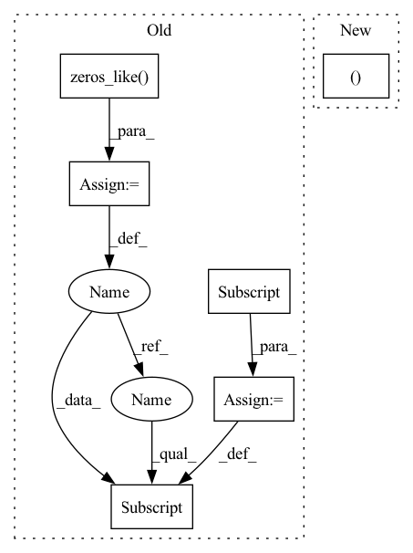

Pattern ID :22875
Before Change
if self.context > 1:
z = [x]
for d in range(1, self.context // 2 + 1):
z_u = torch.zeros_like( x)
z_u[:, d:, :] = x[:, :-d, :] // i-d
z.append(z_u)
z_d = torch.zeros_like(x)
z_d[:, :-d, :] = x[:, d:, :] // i+dAfter Change
x = self.contextize(x, self.context) // (B, N, C*context)
if self.mix_base > 0 and x_base is not None:
x_base = self.contextize(x_base, self.mix_base) // (B, N, 4*mix_base)
x = torch.cat((x_base, x ), dim=2)
x = x.view(B*N, -1) // (B*N, C*width)
for fc in self.fc[:-1]:In pattern: SUPERPATTERN
Frequency: 4
Non-data size: 6
Instances Fragment ID: 72717988
Project Name: keio-bioinformatics/mxfold2
Commit Name: 998dd44f054b5851de1d3b751eb20091d5bf5628
Time: 2019-11-11
Author: satoken@bio.keio.ac.jp
File Name: dnnfold/fold/layers.py
M Class Name: FCUnpairedLayer
N Class Name: FCUnpairedLayer
M Method Name: forward(3)
N Method Name: forward(2)
M Parent Class: nn.Module
N Parent Class: nn.Module
M File Name: dnnfold/fold/layers.py
N File Name: dnnfold/fold/layers.py
M Start Line: 212
M End Line: 223
N Start Line: 255
N End Line: 263
Before Change
z_u = torch.zeros_like(x)
z_u[:, d:, :] = x[:, :-d, :] // i-d
z.append(z_u)
z_d = torch.zeros_like( x)
z_d[:, :-d, :] = x[:, d:, :] // i+d
z.append(z_d)
x = torch.cat(z, dim=2) // (B, N, C*width)
After Change
x = self.contextize(x, self.context) // (B, N, C*context)
if self.mix_base > 0 and x_base is not None:
x_base = self.contextize(x_base, self.mix_base) // (B, N, 4*mix_base)
x = torch.cat((x_base, x ), dim=2)
x = x.view(B*N, -1) // (B*N, C*width)
for fc in self.fc[:-1]: Fragment ID: 72717991
Project Name: keio-bioinformatics/mxfold2
Commit Name: 998dd44f054b5851de1d3b751eb20091d5bf5628
Time: 2019-11-11
Author: satoken@bio.keio.ac.jp
File Name: dnnfold/fold/layers.py
M Class Name: FCUnpairedLayer
N Class Name: FCUnpairedLayer
M Method Name: forward(3)
N Method Name: forward(2)
M Parent Class: nn.Module
N Parent Class: nn.Module
M File Name: dnnfold/fold/layers.py
N File Name: dnnfold/fold/layers.py
M Start Line: 212
M End Line: 223
N Start Line: 255
N End Line: 263
Before Change
def forward(self, input_, syn, mem):
mem_shift = mem - self.threshold
spk = self.spike_grad(mem_shift).to(device)
reset = torch.zeros_like( mem)
spk_idx = (mem_shift > 0)
reset[spk_idx] = torch.ones_like(mem)[spk_idx]
syn = self.alpha * syn + input_
mem = self.beta * mem + syn - reset
After Change
super(Stein, self).__init__(alpha, beta, threshold, spike_grad)
def forward(self, input_, syn, mem):
spk, reset = self.fire(mem)
syn = self.alpha * syn + input_
mem = self.beta * mem + syn - reset
Fragment ID: 72717990
Project Name: jeshraghian/snntorch
Commit Name: c5a219ccaa7539fe34f4406a8793df31ab18dd76
Time: 2020-12-25
Author: 40262130+jeshraghian@users.noreply.github.com
File Name: snntorch/__init__.py
M Class Name: Stein
N Class Name: Stein
M Method Name: forward(4)
N Method Name: forward(4)
M Parent Class: LIF
N Parent Class: LIF
M File Name: snntorch/__init__.py
N File Name: snntorch/__init__.py
M Start Line: 87
M End Line: 91
N Start Line: 97
N End Line: 97
Before Change
def forward(self, input_, syn_pre, syn_post, mem):
mem_shift = mem - self.threshold
spk = self.spike_grad(mem_shift).to(device)
reset = torch.zeros_like( mem)
spk_idx = (mem_shift > 0)
reset[spk_idx] = torch.ones_like(mem)[spk_idx]
syn_pre = (self.alpha * syn_pre + input_) * (1 - reset)
syn_post = (self.beta * syn_post - input_) * (1 - reset)
mem = self.tau_srm * (syn_pre + syn_post)*(1-reset) + (mem*reset - reset)After Change
raise ValueError("alpha must be greater than beta.")
def forward(self, input_, syn_pre, syn_post, mem):
spk, reset = self.fire(mem)
syn_pre = (self.alpha * syn_pre + input_) * (1 - reset)
syn_post = (self.beta * syn_post - input_) * (1 - reset)
mem = self.tau_srm * (syn_pre + syn_post)*(1-reset) + (mem*reset - reset) Fragment ID: 72717992
Project Name: jeshraghian/snntorch
Commit Name: c5a219ccaa7539fe34f4406a8793df31ab18dd76
Time: 2020-12-25
Author: 40262130+jeshraghian@users.noreply.github.com
File Name: snntorch/__init__.py
M Class Name: SRM0
N Class Name: SRM0
M Method Name: forward(5)
N Method Name: forward(5)
M Parent Class: LIF
N Parent Class: LIF
M File Name: snntorch/__init__.py
N File Name: snntorch/__init__.py
M Start Line: 117
M End Line: 121
N Start Line: 122
N End Line: 122